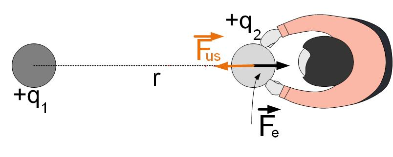

Work per unit
charge Number of electrons in an atom Mechanical force on a charge

Figure 2: Potential is not dependent on the specific path.
When charges are pushed around in an electric field, the energy is not lost. Electrical forces are conservative.
How much energy do we have to bring into the system to bring two far-away positive charges at a distance r?
To answer that question, we can look at Figure Potential1. Bringing the first charge to a certain position in space would require no work since there are no other charged particles around, no electric field, and therefore no force. To bring the second charge at a distance r from the first charge, we need to overcome the repulsive force between the charges. How much work does this take? The work that we need to do to bring charges together is equal to the work that the first charge has to do to repel the second charge. The only difference is that we have to move the charges closer together, from infinity to some distance r, and the repulsive force does the work (pushes the charge away) from the distance r to infinity.

The electric force is , so we can calculate the total work necessary to bring the two charges at distance r.
Since the charge is moved in the direction of the force, we can drop vectors and calculate the work we have to do.
This work is the same no matter what path we take to move charge from infinity to a distance r from charge , see Figure PotentialWork. It depends only on the initial and end position of the charge.
The work needed to move the two charges closer together depends on both charges and , just like the electrostatic force depends on both charges. It would be easier to define another variable that will separate the cause, charge , and the effect, the work that we have to do to move charge . This variable is Electric Potential. Electric potential is defined as the work we need to do to move the charge divided by the amount of charge .
Observe that in Equation Potential2 the potential is a function of the ”source” charge . We again separated the source and the effect, but this time of the potential energy. The source is a charge that produces potential V. If we now want to see what is the potential energy or work that we need to do to move another charge, we don’t have to know which charge produced it. We only need to know the potential in an area, from which we can find the potential energy change of charge .
We can find potential energy and potential of any number of charges using the above expression and the principle of superposition.
In the first section, we defined the work necessary to bring two charges togeter at a distance r as
Electric force can be expressed in terms of electric field as
If we substitute the electric force from the above equation into Equation eqn:definitionWork, we get
The potential of a point R with respect to infinity is then defined as
The potential at a point due to a unit positive charge is found to be V. If the distance between the charge and the point is tripled, the potential becomes
The potential difference between two points is defined as . We defined the potential at a point in the equation above as
The potential difference, or voltage is then defined as
Demonstration of potential difference in radial electric field of a VanDenGraaf generator by Prof. Emeritus at MIT, Walter Lewin.
Now you can enjoy shocking John Travoltage in this PhET simulation.
From the equation above, if we look at the potenital of two points that are very close on the x-axis, , and , the voltage is equal to . Therefore the electric field in the x-direction is
The above equations states that the field is proportional to the change of potential over distance. The larger the change of potential over distance, the stronger the field.
To find the electric field in 3 dimensions, we use the gradient function, which represents a 3-dimensional derivative.
Now click on the 2D view.